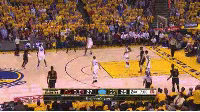
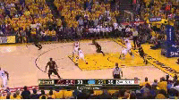
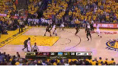

← After a quiet start, r/nba ignites after a Harrison Barnes 3-pointer
↖ With 8 minutes to go in the 1st, KLove fires up r/nba by pounding the glass
← Barnes love quickly turns to Barnes hate, as he misses two shots in rapid succession
← A flop by Varejao on a KLove post-up sends r/nba into a frenzy for 2 full minutes
← After a short quiet spell, a Shump AND-1 triple gets makes r/nba question everything they think they know
← A red and blue mosaic arises from a LeBron swat of Curry
← After 2 straight 3's and an AND-1, 9:00-9:07PM is the Dray show
← A ticky-tack 3rd foul call on Steph draws some outrage (and some rejoicing too)
Halftime is looooooong and r/nba is quiet. There's even a 10 second span where no comments are made... must have been a good halftime show
← If there's one thing r/nba loves, it's hating on Harry Barnes. A missed shot+foul has people talking for 4 whole minutes
← 5 straight points from Steph creates some rumbles, but not as much as I would have expected. Lebron's missed jumper makes this region blue and red
← Varejao getting swatted is the last straw for r/nba and Kerr, as it's the last we see of him the rest of the game
← The comment rate hits a new peak as Kyrie converts a sexy lay-in
← A pattern emerges: r/nba clearly has some obsession with Harrison Barnes as comments appear for every play he's involved in. Meanwhile Klay mentions are few and far between
← As the 4th quarter starts, comments become less frequent during the game, and more frequent during commercial breaks. Kyrie's tip-in comes right before a commercial break, leading to some discussion
← Steph's huge pull-up 3 ties the game, with only a small up-tick in comment rate. People are glued in
← The play of the game (in my opinion) gives rise to a new peak. Lebron's iconic chasedown block on Iggy
↖ Kyrie put's the Cavs on top with a CLUTCH 3, stealing a bit (but not much) of Lebron's spotlight
↖ Finally, the comment rate reaches it's maximum peak after a hard foul from Dray who survives Lebron's murder attempt, sending Bron to the floor
↖ Redditors react swiftly following the end of the game, voicing their happiness, sadness, or straight up disbelief. 5 minutes later, the comments die down and the herd moves on to the post game thread